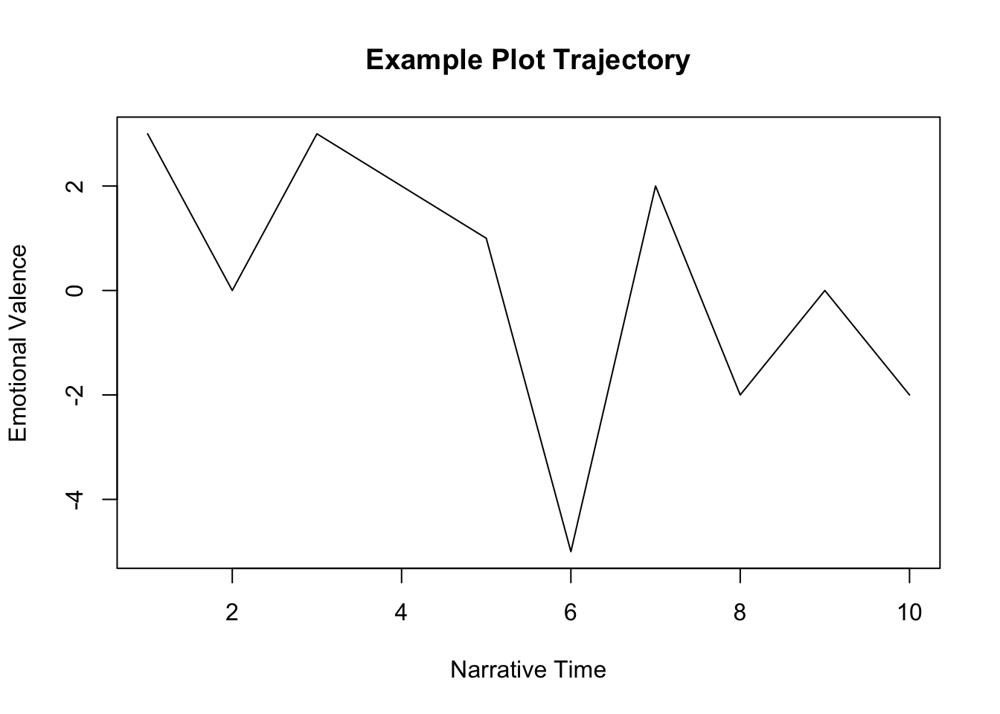
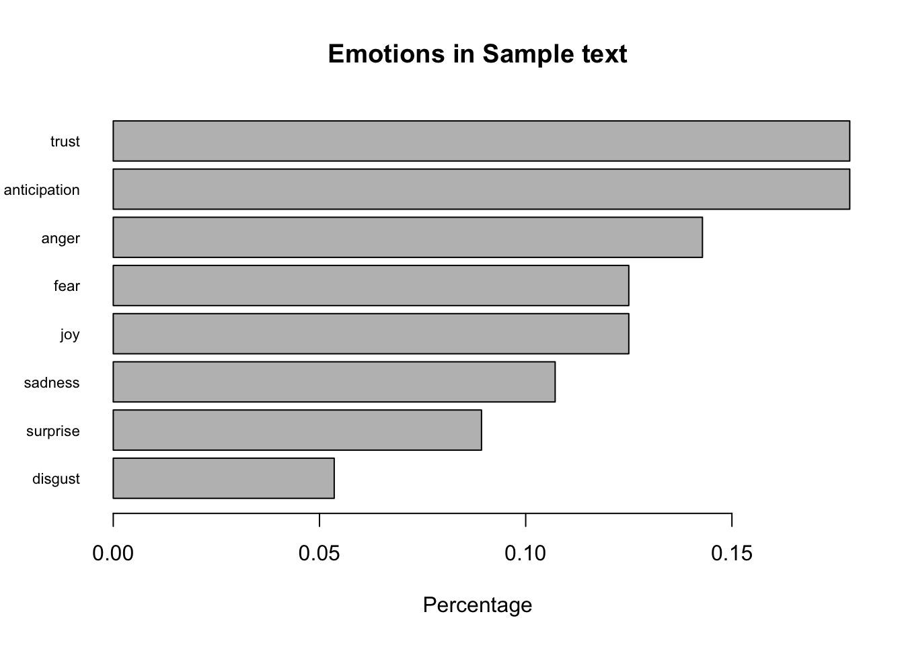

Тема 10 Эмоциональная тональность
10.1 Анализ тональности
Анализ тональности текста (англ. Sentiment analysis) — задача компьютерной лингвистики, заключающаяся в определении эмоциональной окраски (тональности) текста и, в частности, в выявлении эмоциональной оценки авторов по отношению к объектам, описываемым в тексте.
В целом, задача анализа тональности текста эквивалентна задаче классификации текста, где категориями текстов могут быть тональные оценки (позитивная, негативная или нейтральная).
10.2 Подходы
Сделав большое обобщение, можно разделить существующие подходы на следующие категории:
- подходы, основанные на правилах;
- подходы, основанные на словарях;
- машинное обучение с учителем;
- машинное обучение без учителя.
В этом уроке мы будем работать только со словарями. Подробнее о других подходах можно прочитать здесь.
10.3 Тезаурусы
Подходы, основанные на словарях, используют так называемые тональные словари (англ. affective lexicons) для анализа текста. В простом виде тональный словарь представляет из себя список слов со значением тональности для каждого слова.
Сравнивая текст (или отрывок текста) со словарем, мы можем вычислить тональность для всего текста (или отрывка). Словари эмоциональной тональности размечаются вручную, полуавтоматически или автоматически на основании уже существующих тезаурусов. В основном они содержат лексику из соцсетей, отзывов, Википедии, и поэтому не очень подходят для анализа литературных текстов, особенно написанных 100-200 лет назад.
Разные тезаурусы используют разные шкалы:
- бинарную: negative / positive (-1 / 1)
- тринарную: бинарная + 0 (neutral)
- ранжированную: например, от -5 до 5
В некоторых случаях дополнительно вводятся различия между оценочной лексикой (“неряшливый”) и негативным фактом (“кража”) и т.п.
10.4 Лексиконы для русского языка
Установка пакета с лексиконами.
Начало работы.
10.4.1 Chen & Skiena
Русский язык входит в языков, для которых Й. Чен и С. Скиена собрали оценочную лексику (Chen and Skiena 2014). Их лексикон построен на основе графа знаний, связывающего слова на разных языках (на основе Wiktionary, Google Translate, транслитерационных ссылок и WordNet). Слова оцениваются по бинарной шкале ( -1 / 1).
## token score
## 1: пустошь -1
## 2: революционный 1
## 3: расизм -1
## 4: медленный -1
## 5: лекарство 1
## 6: поддержка 1
## 7: стабилизировать 1
## 8: лисица -1
## 9: мягкость 1
## 10: примесь -110.4.2 RuSentLex 2016
Для русского языка в свободном доступе находится РуСентиЛекс (“Создание лексикона оценочных слов русского языка РуСентилекс” 2016). Он содержит около 15000 уникальных слов или фраз, среди которых оценочные слова, а также слова и выражения, не передающие оценочное отношения автора, но имеющие положительную или отрицательную ассоциацию (коннотацию). Возможные значения переменной sentiment: neutral, positive, negative, positive/negative.
## token speech.part lemma sentiment source
## 1 любить Verb любить neutral fact
## 2 самозабвенный Adj самозабвенный positive feeling
## 3 потянуть Verb потянуть neutral fact
## 4 рожа Noun рожа negative opinion
## 5 острозаразный Adj острозаразный negative fact
## 6 тюфяк Noun тюфяк neutral fact
## 7 просчитаться Verb просчитаться negative fact
## 8 перехлестнуть Verb перехлестнуть positive/negative opinion
## 9 беспокойный Adj беспокойный negative feeling
## 10 задеревенеть Verb задеревенеть negative opinion
## ambiguity
## 1 ЛЮБИТЬ (НУЖДАТЬСЯ В УСЛОВИЯХ)
## 2
## 3 ТЯНУТЬ (ТАЩИТЬ НАПРАВЛЯЯ КУДА-ЛИБО)
## 4 ЛИЦО ЧЕЛОВЕКА
## 5
## 6 МАТРАЦ
## 7
## 8 ОБУЯТЬ, ОБУРЕВАТЬ
## 9
## 10 ДЕРЕВЕНЕТЬ, КОСТЕНЕТЬ (НЕМЕТЬ, ВОЗМОЖНО ОТВЕРДЕВАЯ)При работе с этим лексиконом следует учитывать, что для отдельных слов он содержит несколько вхождений, как положительных, так и отрицательных, например:
## token speech.part lemma sentiment source ambiguity
## 1 нежный Adj нежный negative opinion ХРУПКИЙ (СЛИШКОМ СЛАБЫЙ, НЕЖНЫЙ)
## 2 нежный Adj нежный positive opinion ЛАСКОВЫЙ
## 3 нежный Adj нежный positive opinion МЯГКИЙ, НЕЖНЫЙ НА ОЩУПЬ
## 4 нежный Adj нежный positive opinion НЕЖНЫЙ ПО ЗВУЧАНИЮ10.4.3 AFINN
Словарь AFINN содержит 7268 оценочных слов. Их тональность оценивается по шкале от -5 (крайне негативная) до 5 (в высшей степени положительная). Например, слово “адский” имеет оценку -5, а слово “ангельский” – +5.
## token score
## 1: экстатический 1.7
## 2: знаковый 1.7
## 3: счастливчик 5.0
## 4: суматошный -3.3
## 5: гад -5.0
## 6: выразительный 5.0
## 7: жутковатый -5.0
## 8: креативность 5.0
## 9: обнадёживать 2.5
## 10: привлекательно 5.010.4.4 NRC
Переведенная версия списка положительных и отрицательных слов Mohammad & Turney (2010)41. Таблица содержит 5179 слов с не нейтральными оценками. Бинарная шкала: -1 / 1.
## token score
## 1: энциклопедия 1
## 2: подходящий 1
## 3: издевательство -1
## 4: пленительный 1
## 5: утопический 1
## 6: недоброжелательство -1
## 7: вероломный -1
## 8: вирулентность -1
## 9: победоносный 1
## 10: незначительность -110.5 Анализ тональности с Tidy Data
(Silge and Robinson 2017), говоря об анализе эмоциональной тональности в духе tidy data, предлагают следующую иллюстрацию:

Авторы предостерегают, впрочем, что современные лексиконы могут быть не слишком информативны применительно к классической литературе (в книге анализируются романы Джейн Остин). Мы попробуем, тем не менее, подвергнуть “сентиментальному анализу” сентиментальную прозу Карамзина.
10.6 Подготовка текста
Прежде всего текст необходимо токенизировать, лемматизировать и привести в опрятный формат, как мы делали в предыдущем уроке.
library(udpipe)
liza <- readLines(con = "files/karamzin_liza.txt")
russian_syntagrus <- udpipe_load_model(file = "russian-syntagrus-ud-2.5-191206.udpipe")
liza_ann <- udpipe_annotate(russian_syntagrus, liza)
liza_df <- as_tibble(liza_ann) %>%
select(-paragraph_id, -sentence, -xpos)Разделим весь текст “Лизы” на отрывки по 100 слов: это позволит проверить, как меняется эмоциональная тональность произведения по мере развития сюжета.
liza_tbl <- as_tibble(liza_ann) %>%
filter(upos != "PUNCT") %>%
select(lemma) %>%
rename(token = lemma) %>%
mutate(chunk = round(((row_number() + 50) / 100), 0))
liza_tbl## # A tibble: 5,049 × 2
## token chunk
## <chr> <dbl>
## 1 мочь 1
## 2 быть 1
## 3 никто 1
## 4 из 1
## 5 жить 1
## 6 в 1
## 7 Москва 1
## 8 не 1
## 9 знать 1
## 10 так 1
## # ℹ 5,039 more rowsВ тексте чуть более 5000 слов, у нас получился 51 отрывок.
10.7 Модификация лексикона
Для анализа эмоциональной тональности возьмем лексикон AFINN, доступный в пакете rulexicon. Слово “старый” имеет в этом лексиконе отрицательную оценку, что не соответствует словоупотреблению Карамзина, и мы его удалили; слову “чувствительный” поменяли знак с минуса на плюс, поскольку для автора “Бедной Лизы” это скорее положительное качество.
Код ниже показывает, как вносятся подобные изменения:
10.8 Соединение лексикона и текста
Стоп-слова, то есть слова, не несущие никакой смысловой нагрузки, нам не нужны, но удалять их отдельно нет смысла: мы соединим, при помощи функции inner_join() (см. предыдущие уроки), наш текст с одним из лексиконов, и это само по себе отфильтрует ту лексику, которая может быть потенциально интересна. Напомню, что inner_join() работает так:

## # A tibble: 461 × 3
## token chunk score
## <chr> <dbl> <dbl>
## 1 хорошо 1 5
## 2 новый 1 1.7
## 3 приятный 1 5
## 4 новый 1 1.7
## 5 красота 1 5
## 6 приятный 1 5
## 7 мрачный 1 -5
## 8 горе 1 -5
## 9 ужасный 1 -5
## 10 величественный 1 3.3
## # ℹ 451 more rowsСложив положительно и отрицательно окрашенную лексику для каждого отрывка, получаем значение, позволяющее судить о доминирующей тональности:
liza_chunk_sent <- liza_sent %>%
group_by(chunk) %>%
summarise(sum = sum(score)) %>%
arrange(sum)
head(liza_chunk_sent, 10)## # A tibble: 10 × 2
## chunk sum
## <dbl> <dbl>
## 1 5 -43.3
## 2 34 -35.8
## 3 31 -25
## 4 38 -20
## 5 42 -20
## 6 50 -20
## 7 3 -15.7
## 8 51 -15
## 9 4 -14.2
## 10 46 -13.3Довольно неожиданно, что самый негативный отрывок находится не в конце повести, ближе к трагической ее развязке, а почти в начале (отрывок 5, ср. отрывки 3 и 4 рядом). Представим эмоционально окрашенную лексику отрывков 3-5 в виде сравнительного облака слов:
library(reshape2)
library(wordcloud)
# добавляем новый столбец для удобства визуализации
liza_sent_class <- liza_sent %>%
mutate(tone = case_when( score >= 0 ~ "pos",
score < 0 ~ "neg"))
set.seed(0211)
liza_sent_class %>%
filter(chunk %in% c(3, 4, 5)) %>%
count(token, tone, sort = T) %>%
acast(token ~ tone, value.var = "n", fill = 0) %>%
comparison.cloud(colors = c("grey20", "grey80"),
max.words = 99)
Здесь видно, что негативная тональность в этой части не связана с судьбой героев: об этом говорят такие слова, как “лютый”, “враг”, “свирепый”. Рассказчик, глядя на заброшенный Симонов монастырь, вспоминает о “печальной истории” Москвы. Таким образом, с количественной точки зрения, самые мрачный фрагмент повести посвящен не судьбе бедной девушки, а “глухому стону времен”: Карамзин-историк уже переигрывает Карамзина-новелиста.
Приведем небольшой отрывок из этой части повести:
Иногда на вратах храма рассматриваю изображение чудес, в сем монастыре случившихся, там рыбы падают с неба для насыщения жителей монастыря, осажденного многочисленными врагами; тут образ богоматери обращает неприятелей в бегство. Все сие обновляет в моей памяти историю нашего отечества — печальную историю тех времен, когда свирепые татары и литовцы огнем и мечом опустошали окрестности российской столицы и когда несчастная Москва, как беззащитная вдовица, от одного бога ожидала помощи в лютых своих бедствиях.
10.9 Тональность на оси времени
Таблица, которую мы подготовили, позволяет наглядно показать, как меняется тональность во времени – разумеется, речь идет о повествовательном времени, которое измеряется не в минутах, а в словах. Каждый отрывок, напомню, – это 100 слов.
liza_chunk_sent <- liza_chunk_sent %>%
mutate(tone = case_when( sum >= 0 ~ "pos",
sum < 0 ~ "neg"))
library(ggplot2)
ggplot(liza_chunk_sent, aes(chunk, sum, fill = tone)) +
geom_col(show.legend = F)График получился весьма осмысленным. Мы уже сказали выше про отрывки 3-4. Дальше немного скорби в отрывке 8 посвящено покойному отцу Лизы. В 11-м отрывке отразилась тревога матери за судьбу дочери: “коварно”, “обидеть”, “дурной” вносят вклад в настроение этого фрагмента. Это достаточно характерно для сентиментальной прозы с ее противопоставлением пороков городской жизни и пасторальных добродетелей.
У меня всегда сердце бывает не на своем месте, когда ты ходишь в город; я всегда ставлю свечу перед образ и молю господа бога, чтобы он сохранил тебя от всякой беды и напасти.
В отрывке 15 несколько негативных слов имеют перед собой отрицания (“не подозревая”, “никакого худого намерения” и т.п.), поэтому к числу отрицательно окрашенных он отнесен ошибочно. К сожалению, это недостаток подхода, основанного на словарях, не принимающего в учет синтаксические связи в предложении.
Еще два минимума: отрывки 31 и 34. В первом из них Лиза встревожена вестью о возможном замужестве с сыном крестьянина. Отрывок 34 – это падение Лизы:
Грозно шумела буря, дождь лился из черных облаков — казалось, что натура сетовала о потерянной Лизиной невинности.
На графике видно, что это место гораздо более эмоционально, чем эпизод самоубийства Лизы: именно после знаменитых карамзинских многоточий и тире события устремляются к трагическому финалу. О самой смерти девушки Карамзин говорит, конечно, с грустью, но без надрыва: “Тут она бросилась в воду”.
38, 39, 42 – Эраст отправляется на войну. Все, как это принято у Карамзина, плачут, что зафиксировал и наш график.
Наконец, в отрывках 49-51 доминирует тема смерти:
library(RColorBrewer)
pal <- RColorBrewer::brewer.pal(5, "Dark2")
liza_sent_class %>%
filter(chunk %in% c(49:51)) %>%
filter(tone == "neg") %>%
count(token, sort = T) %>%
with(wordcloud(token, n, max.words = 100, colors = pal))
Следует отметить, что часть этих слов относится не к самой девушке, а к ее матери.
10.10 Для других языков
Для языков, которые используют латиницу, в R есть отличный пакет под названием syuzhet. Его разработал известный цифровой литературовед Мэтью Джокерс42. Название пакета, как говорит его разработчик, подсмотрено у русских формалистов Виктора Шкловского и Владимира Проппа. Возможности и ограничения этого пакета обсуждались в специальной литературе43.
Для анализа возьмем стихотворение Роберта Фроста “Медведи” (перевод).
library(syuzhet)
my_example_text <- "The bear puts both arms around the tree above her
And draws it down as if it were a lover
And its choke cherries lips to kiss good-bye,
Then lets it snap back upright in the sky.
Her next step rocks a boulder on the wall
(She's making her cross-country in the fall).
Her great weight creaks the barbed-wire in its staples
As she flings over and off down through the maples,
Leaving on one wire moth a lock of hair.
Such is the uncaged progress of the bear.
The world has room to make a bear feel free;
The universe seems cramped to you and me.
Man acts more like the poor bear in a cage
That all day fights a nervous inward rage -
His mood rejecting all his mind suggests.
He paces back and forth and never rests
The toe-nail click and shuffle of his feet,
The telescope at one end of his beat -
And at the other end the microscope,
Two instruments of nearly equal hope,
And in conjunction giving quite a spread.
Or if he rests from scientific tread,
'Tis only to sit back and sway his head
Through ninety odd degrees of arc, it seems,
Between two metaphysical extremes.
He sits back on his fundamental butt
With lifted snout and eyes (if any) shut,
(he almost looks religious but he's not),
And back and forth he sways from cheek to cheek,
At one extreme agreeing with one Greek -
At the other agreeing with another Greek
Which may be thought, but only so to speak.
A baggy figure, equally pathetic
When sedentary and when peripatetic."Пакет позволяет разделить текст на предложения:
## [1] "The bear puts both arms around the tree above her\nAnd draws it down as if it were a lover\nAnd its choke cherries lips to kiss good-bye,\nThen lets it snap back upright in the sky."
## [2] "Her next step rocks a boulder on the wall\n(She's making her cross-country in the fall)."Воспользуемся регулярными выражениями, чтобы удалить переносы строк:
## [1] "The bear puts both arms around the tree above her And draws it down as if it were a lover And its choke cherries lips to kiss good-bye, Then lets it snap back upright in the sky."
## [2] "Her next step rocks a boulder on the wall (She's making her cross-country in the fall)."Если вы хотите прочитать в R большой файл, для этого есть функция get_text_as_string, который необходимо указать путь к файлу на компьютере или url.
Функция get_sentiment принимает в качестве аргументов вектор и метод (о методах можно подробнее узнать, вызвав помощь).
## [1] 1 -1 0 1 0 -3 0 -1 0 -2Как видно, не очень радостное стихотворение. Взглянем на самое мрачное предложение:
## [1] "Man acts more like the poor bear in a cage That all day fights a nervous inward rage - His mood rejecting all his mind suggests."Результат применения различных методов может несколько отличаться.
## [1] 3 0 3 2 1 -5 2 -2 0 -2## [1] "Man acts more like the poor bear in a cage That all day fights a nervous inward rage - His mood rejecting all his mind suggests."Но в нашем случае методы согласны: сравнение человека с беспокойным медведем в клетке – эмоциональный минимум стихотворения.
Эмоциональная валентность произведения в целом вычисляется либо как сумма, либо как среднее всех значений:
## [1] 2## [1] 0.2Не так уж плохо: за счет первой части про медведицу, с удовольствием поедающую черемуху, общая тональность скорее положительная (хотя ваш читательский опыт может говорить об обратном).
Результат можно передать функции plot():
plot(afinn_vector,
type="l",
main="Example Plot Trajectory",
xlab = "Narrative Time",
ylab= "Emotional Valence")
О других способах визуализировать результат можно узнать из виньетки к пакету.
10.11 Виды эмоций
Лексикон NRC дает возможность позволяет не просто оценить эмоциональную валентность, но и выявить конкретные эмоции:
## anger anticipation disgust fear joy sadness surprise trust negative positive
## 1 3 5 1 1 4 1 3 4 1 6
## 2 1 0 0 1 0 2 0 0 2 0
## 3 0 1 1 1 1 1 1 1 1 1
## 4 1 1 0 1 1 0 0 0 0 1
## 5 1 0 0 1 0 0 0 0 1 0
## 6 2 1 0 2 0 1 0 0 3 0
## 7 0 1 0 0 1 0 1 2 0 2
## 8 0 0 0 0 0 0 0 1 0 1
## 9 0 1 0 0 0 0 0 2 1 2
## 10 0 0 1 0 0 1 0 0 1 1Выбрать конкретные эмоции можно так (но результат в нашем случае не очень осмысленный):
На графике это можно отразить при помощи базовой barplot:
barplot(
sort(colSums(prop.table(nrc_data[, 1:8]))),
horiz = TRUE,
cex.names = 0.7,
las = 1,
main = "Emotions in Sample text", xlab="Percentage"
)
Сложно осуждать машину за не вполне верно считанную тональность: Фрост – сложный автор. Для отзывов на Tripadvisor это может сработать лучше.